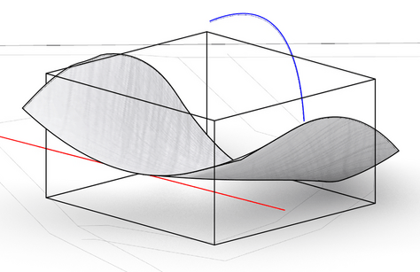

This pavilion is designed as a sanctuary
for those mourning the loss of a loved one,
offering a place to remember them through
the cultivation of a tree. To honor the spirit
of the forest, we incorporated tree branches
as the pavilion’s primary structural elements.
The form follows the minimal surface principle,
with the concept drawing inspiration from
the 'crown shyness' phenomenon observed in tree canopies. ▾

Form finding diagram ; using two set of lines for creating minimal surface
▾